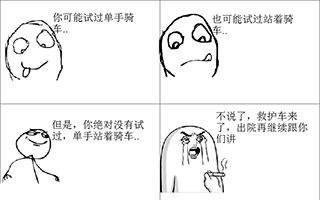

菜单
主界面
暴走漫画
互联网早期
:) 字符表情
颜文字
qq时代
小黄人表情
“中老年”表情
兔斯基表情
绿豆蛙表情
diy时代
暴走漫画表情
微信时代
假人表情
熊猫人表情
王境泽表情
窃格瓦拉表情
DIY动图表情制作
表情起源
2007年7月17日，一个匿名用户上传了用Windows画板画的一则四格漫画，讲述一个好笑的经历。 虽然这幅四格漫画中的线条非常简陋，却大获网友认同，并迅速奠定了一种新的漫画形式——暴走漫画(Rage Conmic)。 2011年，一个网名为“王尼玛”的网友创办了专门发布暴走漫画并配有制作器的暴走漫画中文网站，大大推进了暴走漫画表情包在中国的普及过程。
表情例子
暴走漫画表情包的图案虽然简单，但却更为夸张，富有表现力。
偷笑
骄傲
好伤心
请继续说
nooo!!!
特点及影响
暴走漫画表情包有着独特的特点： 
暴走漫画表情包可以由使用者diy情节和内容,就像右图所示一般
暴走漫画表情包比起之前的表情包都更为夸张
暴走漫画表情包有时也会使用名人的头像作为表情
暴走漫画表情因此也带来了许多影响：
在这之后，表情包中diy的成分渐渐兴起
在这之后，许多表情包也继承了暴走漫画的夸张劲
在这之后，许多表情包开始将名人、身边人都融入了表情包的表达中
written by: 黎思宇、 刘旭鑫
致谢开源
MDUI
开发者们